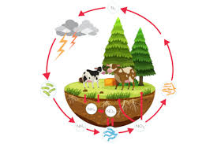
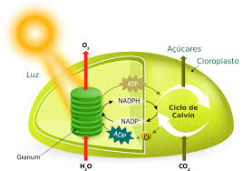

Quimiosíntese
A quimiossíntese é um processo pelo qual certos organismos, como algumas bactérias, produzem matéria orgânica a partir da oxidação de compostos inorgânicos, sem a necessidade de luz solar. Este processo é comum em ambientes extremos, como fontes hidrotermais no fundo do oceano. Oxidação de Compostos Inorgânicos: Organismos quimiossintetizantes utilizam substâncias como sulfeto de hidrogênio, amônia ou metano para obter energia. Essa energia é então usada para converter dióxido de carbono e água em glicose. Equação Geral da Quimiossíntese: Embora varie dependendo do composto inorgânico utilizado, uma equação geral pode ser representada como: CO2+O2+4H2S→CH2O+4S+3HsubO
Fotossíntese
A fotossíntese é o processo pelo qual as plantas, algas e algumas bactérias convertem a energia da luz solar em energia química, armazenada em moléculas de glicose. Este processo ocorre nos cloroplastos das células vegetais e pode ser dividido em duas etapas principais: Reações Luminosas: Ocorrem nas membranas dos tilacoides dentro dos cloroplastos. A luz solar é absorvida pela clorofila e outros pigmentos, gerando ATP e NADPH, que são usados na próxima etapa. Ciclo de Calvin (Reações de Fixação de Carbono): Ocorre no estroma dos cloroplastos. O ATP e o NADPH produzidos nas reações luminosas são usados para converter dióxido de carbono em glicose